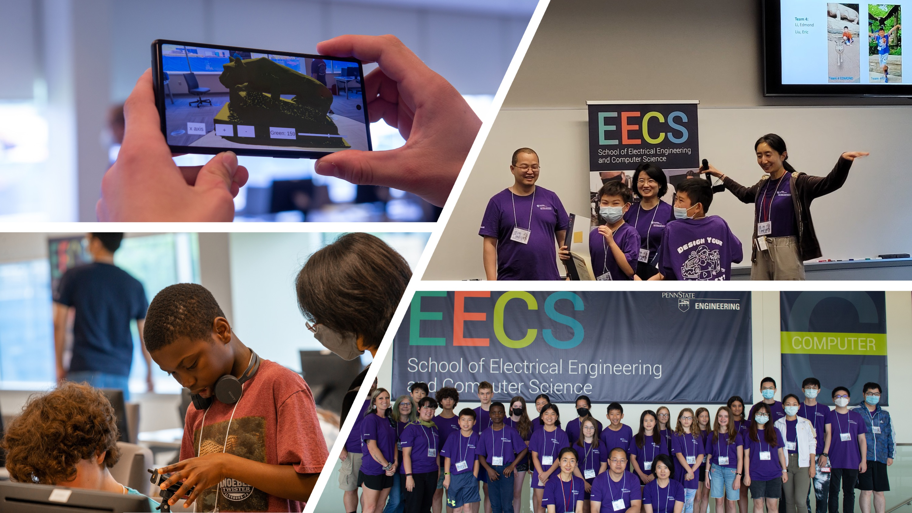

CNS Core: Medium: When Next Generation Wireless Networks Meet Machine Learning (CNS-1956276)
Overview
 |
This project aims to build a new paradigm of learning-based channel estimation and tracking, network resource allocation, and optimization schemes for millimeter wave (mmWave) networks operating in a highly dynamic and even non-stationary environment. The project consists of the following synergistic thrusts for the successful design and implementation of mmWave communication networks, followed by a comprehensive system-level validation. (1) Exploiting non-convex optimization to quickly sense the wireless channels and learn optimal beams. (2) Design online learning based access point (AP) scanning and association schemes for seamless mmWave connectivity. (3) Developing collaborative and distributed resource allocation algorithms, enabling dynamic data sharing with time-varying network topologies encountered in disruptive applications such as autonomous driving and industrial robotics/IoT. Finally, all of the proposed algorithms will be evaluated with exhaustive experiments across various environmental settings and topological conditions. |
Participants
PI: Jing Yang
Co-PI: Mahanth Gowda, Mehrdad Mahdavi
Graduate Research Assistants: Suryoday Basak, Yuyang Deng, Ruiquan Huang, Donghao Li, Renpu Liu, Pouria Mahdavinia, Yilin Liu, Shijia Zhang
Selected Publications
Average Reward Reinforcement Learning for Wireless Radio Resource Management
K. Yang, J. Yang and C. Shen, The 58th Asilomar Conference on Signals, Systems and Computers, Oct. 2024. (Best Student Paper Award Finalist)Federated Representation Learning in the Under-Parameterized Regime
R. Liu, C. Shen, J. Yang, The 41st International Conference on Machine Learning (ICML), July 2024.Advancing RAN Slicing with Offline Reinforcement Learning
K. Yang, S. Yeh, M. Zhang, J. Sydir, J. Yang, and C. Shen, IEEE International Symposium on Dynamic Spectrum Access Networks (DySPAN), May 2024.Provably Efficient UCB-type Algorithms For Learning Predictive State Representations
R. Huang, Y. Liang and J. Yang, The 12th International Conference on Learning Representations (ICLR), May 2024.Provable Benefits of Multi-task RL under Non-Markovian Decision Making Processes
R. Huang, Y. Cheng, J. Yang, V. Tan and Y. Liang, The 12th International Conference on Learning Representations (ICLR), May 2024.Distributed Personalized Empirical Risk Minimization
Y. Deng, M. Kamani, P. Mahdavinia and M. Mahdavi, Neural Information Processing Systems (NeurIPS), 2023.Mixture Weight Estimation and Model Prediction in Multi-source Multi-target Domain Adaptation
Y. Deng, I. Kuzborskij and M. Mahdavi, Neural Information Processing Systems (NeurIPS), 2023.Near-optimal Conservative Exploration in Reinforcement Learning under Episode-wise Constraints
D. Li, R. Huang, C. Shen, J. Yang, The 40th International Conference on Machine Learning (ICML), July 2023.Non-stationary Reinforcement Learning under General Function Approximation
S. Feng, M. Yin, R. Huang, Y. Wang, J. Yang and Y. Liang, The 40th International Conference on Machine Learning (ICML), July 2023.Exploiting Feature Heterogeneity for Improved Generalization in Federated Multi-task Learning
R. Liu, C. Shen, J. Yang, IEEE International Symposium on Information Theory (ISIT), June 2023.FLORAS: Differentially Private Wireless Federated Learning Using Orthogonal Sequences
X. Wei, T. Wang, R. Huang, C. Shen, J. Yang, H. V. Poor, IEEE International Conference on Communications (ICC), Rome, Italy, May 2023.Leveraging the Properties of mmWave Signals for 3D Finger Motion Tracking for Interactive IoT Applications
Y. Liu, S. Zhang, M. Gowda and S. Nelakuditi. Proceedings of the ACM on Measurement and Analysis of Computing Systems, Volume 6, Issue 3, pp 1–28, December 2022.mmSpy: Spying Phone Calls using mmWave Radars
S. Basak and M. Gowda, IEEE Symposium on Security and Privacy, 2022.Local SGD Optimizes Overparameterized Neural Networks in Polynomial Time
Y. Deng, M. Kamani and M. Mahdavi, Artificial Intelligence and Statistics (AISTAT), 2022Learning Distributionally Robust Models at Scale via Composite Optimization
F. Haddadpour, M. Kamani, M. Mahdavi and A. Karbasi, International Conference on Learning (ICLR), 2022.Tight Analysis of Extra-gradient and Optimistic Gradient Methods For Nonconvex Minimax Problems
P. Mahdavinia, Y. Deng, H. Li and M. Mahdavi, Neural Information Processing Systems (NeurIPS), 2022.Cascading Bandits With Two-Level Feedback
D. Cheng*, R. Huang*, C. Shen and J. Yang, IEEE International Symposium on Information Theory (ISIT), June 2022. (* Equal contribution)Random Orthogonalization for Federated Learning in Massive MIMO Systems
X. Wei, C. Shen, J. Yang, H. V. Poor, IEEE International Conference on Communications (ICC), Seoul, South Korea, May 2022.Federated Linear Contextual Bandits
R. Huang, W. Wu, J. Yang, C. Shen, The 35th Conference on Neural Information Processing Systems (NeurIPS), December 2021.Heterogeneous Multi-player Multi-armed Bandits: Closing the Gap and Generalization
C. Shi, W. Xiong, C. Shen, J. Yang, The 35th Conference on Neural Information Processing Systems (NeurIPS), December 2021.Thresholded Wirtinger Flow for Fast Millimeter Wave Beam Alignment
C. Gan, J. Yang and C. Shen, Asilomar Conference on Signals, Systems and Computers, Pacific Grove, CA, November 2020. (Invited paper)MIMO Receive Antenna Selection via Deep Learning and Greedy Adaptation
C. Shen, D. Li and J. Yang, Asilomar Conference on Signals, Systems and Computers, Pacific Grove, CA, November 2020. (Invited paper)
Broader Impacts
PI Yang co-organized an EECS girls camp themed ‘‘design your own reality’’ in summer 2022. The summer camp is one-week long, and attracted about 20 middle school students, where the majority of the participants were female or from other under-represented groups. The summer camp greatly increased the interests of the participants in CS and EE.
|  |
Acknowledgement
This project is supported in part by the U.S. NSF under grant CNS-1956276. Any opinions, findings, and conclusions or recommendations expressed in this material are those of the author(s) and do not necessarily reflect the views of the NSF.